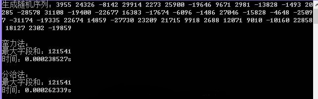

实 验 报 告
学院：计算机科学学院专业： 计算机科学与技术（Z） 2020年12月15日
姓 名 | 学 号 | ||||
班 级 | 指导老师 | 胡伟伟 | |||
手机号码 | 电子邮箱 | ||||
课程名称 | 算法分析与设计 | 成 绩 | |||
实验名称 | 最大子段和问题 | ||||
1．实验目的 了解最大子段和问题是什么，掌握使用Java语言利用蛮力法和分治法实现最大子段和问题的解决，掌握蛮力法和分治法的设计思想，了解数组的使用。 | |||||
2．实验内容 使用Eclipse开发工具及Java语言，通过蛮力法和分治法两种思路实现求最大子段和问题。 | |||||
3．实验环境 jdk版本：1.8 Eclipse：eclipse-jee-mars-2-win32-x86_64 | |||||
4．实验方法和步骤（含设计） 算法描述如下 针对最大子段和这个具体问题本身的结构，我们还可以从算法设计的策略上对上述O(n^2)计算时间算法进行更进一步的改进。从问题的解结构也可以看出，它适合于用分治法求解。 如果将所给的序列a[1:n]分为长度相等的两段a[1:n/2]和a[n/2+1:n],分别求出这两段的最大子段和，则a[1:n]的最大子段和有三种情况： （1） a[1:n]的最大子段和与a[1:n/2]的最大子段和相同 （2） a[1:n]的最大子段和与a[n/2+1:n]的最大子段和相同 （3） a[1:n]的最大子段和为a[i]+…+a[j]，并且1<=i<=n/2，n/2+1<=j<=n。 对于（1）和（2）两种情况可递归求得，但是对于情况（3），容易看出a[n/2]，a[n/2+1]在最大子段中。因此，我们可以在a[1:n/2]中计算出s1=max(a[n/2]+a[n/2-1]+…+a[i]),0<=i<=n/2，并在a[n/2+1:n]中计算出s2= max(a[n/2+1]+a[n/2+2]+…+a[i])，n/2+1<=i<=n。则s1+s2为出现情况（3）的最大子段和 利用蛮力法求解：int maxSum(int a[],int n) { int maxSum = 0; int sum = 0; for(int i = 0; i < n; i++) //从第一个数开始算起 { for(int j = i + 1; j < n; j++)//从i的第二个数开始算起 { sum = a[i]; a[i] += a[j]; if(a[i] > sum) { sum = a[i]; //每一趟的最大值 } return maxSum; int sum = 0; if(left == right) //如果序列长度为1，直接求解 { if(a[left] > 0) sum = a[left]; else sum = 0; 利用分治法求解： int maxSum(int a[],int left, int right) { int sum = 0; if(left == right) //如果序列长度为1，直接求解 { if(a[left] > 0) sum = a[left]; else sum = 0; } else { int center = (left + right) / 2; //划分 int leftsum = maxSum(a,left,center); //对应情况1，递归求解 int rightsum = maxSum(a, center + 1, right);//对应情况2， 递归求解 int s1 = 0; int lefts = 0; for(int i = center; i >= left; i--) //求解s1 { lefts += a[i]; if(lefts > s1) s1 = lefts; //左边最大值放在s1 } int s2 = 0; int rights = 0; for(int j = center + 1; j <= right; j++)//求解s2 { rights += a[j]; if(rights > s2) s2 =rights; } sum = s1 + s2; //计算第3钟情况的最大子段和 if(sum < leftsum) sum = leftsum; //合并，在sum、leftsum、rightsum中取最大值 if(sum < rightsum) sum = rightsum; } return sum; } 5．程序及测试结果  | |||||
6．实验分析与体会 通过这次的实训，我学到了很多： 首先，对JAVA识比以前有了更深的了解。在这之前由于种种原因我JAVA学的很不好，编程我几乎写不出来。但经过这次的实训，我对JAVA的理解，虽然还有很多都不懂，但我会在今后的实训和学习中加以学习了解，力求弄懂，增强自己对JAVA的理解。 其次，在这次的.实训中我的动手操作能力有了一点的提高，刚开始的时候JDK的配置，数据库的安装都出现了一定的问题，JAVA 可实话开发工具的不熟悉， 所以开始的时候进程很慢，时间都用在了JDK的配置，数据库的安装以及熟悉JAVA可视化开发工具上，但付出有了回报，成功的配置了JDK，安装了数据库，熟悉了JAVA可视化开发工具，总的说来，自己还是有一定的收获的。因为自己的动手操纵能力得到了提高。 最后是团队协作。在整个项目完成过程中团队协作有着不可替代的作用。从在刚拿到项目时对项目的分析到最后的项目完结的都有一定的体现。刚拿到项目时，我们团队进行了分析，并分配了各自的任务。当我们其中一人遇到问题的时候，我们其他人都会去帮忙，效率提升了很多。但可能由于不是一个宿舍的，大家彼此间都不是很了解，所以交流中还是存在了一定的问题。 在这次的实训当中我收获颇丰。但仅仅靠这一个月的学习还是远远不够的。所以在以后的学习中我会更加努力，提高自己的能力，让自己在以后的社会道路上打下坚实的基础。 实验日期 ： 2020 年 12 月 17 日 | |||||
教师评语 签名： 年 月 日 | |||||